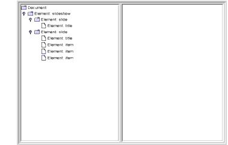
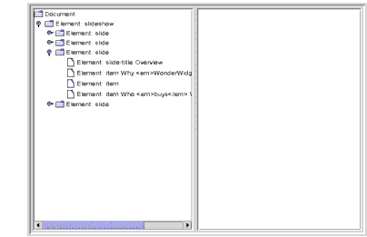
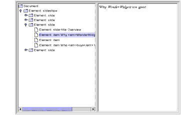
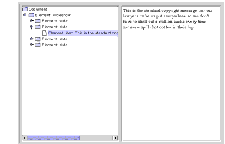
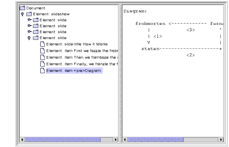

Constructing a User-Friendly JTree from a DOM
Now that you know what a DOM looks like internally, you'll be better prepared to modify a DOM or construct one from scratch. Before we go on to that, though, this section presents some modifications to the
JTreeModelthat let you produce a more user-friendly version of theJTreesuitable for use in a GUI.
Note: In this section, we modify the Swing GUI to improve the display, culminating in
DomEcho04.java. If you have no interest in the Swing details, you can skip ahead to Creating and Manipulating a DOM and useDomEcho04.javato proceed from there.
Compressing the Tree View
Displaying the DOM in tree form is all very well for experimenting and for learning how a DOM works. But it's not the kind of friendly display that most users want to see in a
JTree. However, it turns out that very few modifications are needed to turn theTreeModeladapter into something that presents a user-friendly display. In this section, you'll make those modifications.
Note: The code discussed in this section is in
DomEcho03.java. The file the program operates on isslideSample01.xml. (The browsable version isslideSample01-xml.html.)
Make the Operation Selectable
When you modify the adapter, you're going to compress the view of the DOM, eliminating all but the nodes you really want to display. Start by defining a boolean variable that controls whether you want the compressed or the uncompressed view of the DOM:
public class DomEcho extends JPanel { static Document document;boolean compress = true;static final int windowHeight = 460; ...Identify Tree Nodes
The next step is to identify the nodes you want to show up in the tree. To do that, add the following highlighted code:
... import org.w3c.dom.Document; import org.w3c.dom.DOMException;import org.w3c.dom.Node;public class DomEcho extends JPanel { ... public static void makeFrame() { ... } // An array of names for DOM node type static final String[] typeName = { ... };static final int ELEMENT_TYPE = Node.ELEMENT_NODE; // The list of elements to display in the tree static String[] treeElementNames = { "slideshow", "slide", "title", // For slide show #1 "slide-title", // For slide show #10 "item", }; boolean treeElement(String elementName) { for (int i=0; i<treeElementNames.length; i++) { if ( elementName.equals(treeElementNames[i]) ) return true; } return false; }This code sets up a constant you can use to identify the
ELEMENTnode type, declares the names of the elements you want in the tree, and creates a method that tells whether or not a given element name is a tree element. BecauseslideSample01.xmlhastitleelements and becauseslideSample10.xmlhasslide-titleelements, you set up the contents of this array so that it will work with either data file.
Note: The mechanism you are creating here depends on the fact that structure nodes like
slideshowandslidenever contain text, whereas text usually does appear in content nodes likeitem. Although those "content" nodes may contain subelements inslideShow10.xml, the DTD constrains those subelements to be XHTML nodes. Because they are XHTML nodes (an XML version of HTML that is constrained to be well formed), the entire substructure under anitemnode can be combined into a single string and displayed in thehtmlPanethat makes up the other half of the application window. In the second part of this section, you'll do that concatenation, displaying the text and XHTML as content in thehtmlPane.
Although you could simply reference the node types defined in the class
org.w3c.dom.Node, defining theELEMENT_TYPEconstant keeps the code a little more readable. Each node in the DOM has a name, a type, and (potentially) a list of subnodes. The functions that return these values aregetNodeName(),getNodeType, andgetChildNodes(). Defining our own constants will let us write code like this:As a stylistic choice, the extra constants help us keep the reader (and ourselves!) clear about what we're doing. Here, it is fairly clear when we are dealing with a node object, and when we are dealing with a type constant. Otherwise, it would be tempting to code something like
if (node == ELEMENT_NODE), which of course would not work at all.Control Node Visibility
The next step is to modify the
AdapterNode'schildCountfunction so that it counts only tree element nodes--nodes that are designated as displayable in theJTree. Make the following highlighted modifications to do that:public class DomEcho extends JPanel { ... public class AdapterNode { ... public AdapterNode child(int searchIndex) { ... } public int childCount() {if (!compress) { // Indent thisreturn domNode.getChildNodes().getLength();} int count = 0; for (int i=0; i<domNode.getChildNodes().getLength(); i++) { org.w3c.dom.Node node = domNode.getChildNodes().item(i); if (node.getNodeType() == ELEMENT_TYPE && treeElement( node.getNodeName() )) { ++count; } } return count;} } // AdapterNodeThe only tricky part about this code is checking to make sure that the node is an element node before comparing the node. The
DocTypenode makes that necessary, because it has the same name (slideshow) as theslideshowelement.Control Child Access
Finally, you need to modify the
AdapterNode'schildfunction to return the Nth item from the list of displayable nodes, rather than the Nth item from all nodes in the list. Add the following highlighted code to do that:public class DomEcho extends JPanel { ... public class AdapterNode { ... public int index(AdapterNode child) { ... } public AdapterNode child(int searchIndex) { //Note: JTree index is zero-based. org.w3c.dom.Node node = domNode.getChildNodes()Item(searchIndex);if (compress) { // Return Nth displayable node int elementNodeIndex = 0; for (int i=0; i<domNode.getChildNodes().getLength(); i++) { node = domNode.getChildNodes()Item(i); if (node.getNodeType() == ELEMENT_TYPE && treeElement( node.getNodeName() ) && elementNodeIndex++ == searchIndex) { break; } } }return new AdapterNode(node); } // child } // AdapterNodeThere's nothing special going on here. It's a slightly modified version of the same logic you used when returning the child count.
Check the Results
When you compile and run this version of the application on
slideSample01.xmland then expand the nodes in the tree, you see the results shown in Figure 6-8. The only nodes remaining in the tree are the high-level "structure" nodes.

Figure 6-8 Tree View with a Collapsed Hierarchy
Extra Credit
The way the application stands now, the information that tells the application how to compress the tree for display is hardcoded. Here are some ways you can consider extending the application:
- Use a command-line argument: Whether you compress or don't compress the tree could be determined by a command-line argument rather than being a hardcoded Boolean variable. On the other hand, the list of elements that goes into the tree is still hardcoded, so maybe that option doesn't make much sense, unless...
- Read the
treeElementlist from a file: If you read the list of elements to include in the tree from an external file, that would make the whole application command-driven. That would be good. But wouldn't it be really nice to derive that information from the DTD or schema instead? So you might want to consider...- Automatically build the list: Watch out, though! As things stand right now, there are no standard DTD parsers! If you use a DTD, then, you'll need to write your parser to make sense out of its somewhat arcane syntax. You'll probably have better luck if you use a schema instead of a DTD. The nice thing about schemas is that they use XML syntax, so you can use an XML parser to read the schema in the same way you use it to read any other XML file.
As you analyze the schema, note that the
JTree-displayable structure nodes are those that have no text, whereas the content nodes may contain text and, optionally, XHTML subnodes. That distinction works for this example and will likely work for a large body of real world applications. It's easy to construct cases that will create a problem, though, so you'll have to be on the lookout for schema/DTD specifications that embed non-XHTML elements in text-capable nodes, and take the appropriate action.Acting on Tree Selections
Now that the tree is being displayed properly, the next step is to concatenate the subtrees under selected nodes to display them in the
htmlPane. While you're at it, you'll use the concatenated text to put node-identifying information back in theJTree.
Note: The code discussed in this section is in
DomEcho04.java.
Identify Node Types
When you concatenate the subnodes under an element, the processing you do depends on the type of node. So the first thing to do is to define constants for the remaining node types. Add the following highlighted code:
public class DomEcho extends JPanel { ... // An array of names for DOM node types static final String[] typeName = { ... }; static final int ELEMENT_TYPE = 1;static final int ATTR_TYPE = Node.ATTRIBUTE_NODE; static final int TEXT_TYPE = Node.TEXT_NODE; static final int CDATA_TYPE = Node.CDATA_SECTION_NODE; static final int ENTITYREF_TYPE = Node.ENTITY_REFERENCE_NODE; static final int ENTITY_TYPE = Node.ENTITY_NODE; static final int PROCINSTR_TYPE = Node.PROCESSING_INSTRUCTION_NODE; static final int COMMENT_TYPE = Node.COMMENT_NODE; static final int DOCUMENT_TYPE = Node.DOCUMENT_NODE; static final int DOCTYPE_TYPE = Node.DOCUMENT_TYPE_NODE; static final int DOCFRAG_TYPE = Node.DOCUMENT_FRAGMENT_NODE; static final int NOTATION_TYPE = Node.NOTATION_NODE;Concatenate Subnodes to Define Element Content
Next, you define the method that concatenates the text and subnodes for an element and returns it as the element's content. To define the
contentmethod, you'll add the following big chunk of highlighted code, but this is the last big chunk of code in the DOM tutorial.public class DomEcho extends JPanel { ... public class AdapterNode { ... public String toString() { ... }public String content() { String s = ""; org.w3c.dom.NodeList nodeList = domNode.getChildNodes(); for (int i=0; i<nodeList.getLength(); i++) { org.w3c.dom.Node node = nodeList.item(i); int type = node.getNodeType(); AdapterNode adpNode = new AdapterNode(node); if (type == ELEMENT_TYPE) { if ( treeElement(node.getNodeName()) ) continue; s += "<" + node.getNodeName() + ">"; s += adpNode.content(); s += "</" + node.getNodeName() + ">"; } else if (type == TEXT_TYPE) { s += node.getNodeValue(); } else if (type == ENTITYREF_TYPE) { // The content is in the TEXT node under it s += adpNode.content(); } else if (type == CDATA_TYPE) { StringBuffer sb = new StringBuffer( node.getNodeValue() ); for (int j=0; j<sb.length(); j++) { if (sb.charAt(j) == '<') { sb.setCharAt(j, '&'); sb.insert(j+1, "lt;"); j += 3; } else if (sb.charAt(j) == '&') { sb.setCharAt(j, '&'); sb.insert(j+1, "amp;"); j += 4; } } s += "<pre>" + sb + "</pre>"; } } return s; }... } // AdapterNode
Note: This code collapses
EntityRefnodes, as inserted by the JAXP 1.1 parser that is included in the Java 1.4 platform. With JAXP 1.2, that portion of the code is not necessary because entity references are converted to text nodes by the parser. Other parsers may insert such nodes, however, so including this code future proofs your application, should you use a different parser in the future.
Although this code is not the most efficient that anyone ever wrote, it works and will do fine for our purposes. In this code, you are recognizing and dealing with the following data types:
Element
For elements with names such as the XHTML
emnode, you return the node's content sandwiched between the appropriate<em>and</em>tags. However, when processing the content for theslideshowelement, for example, you don't include tags for theslideelements it contains, so when returning a node's content, you skip any subelements that are themselves displayed in the tree.Text
No surprise here. For a text node, you simply return the node's
value.Entity Reference
Unlike
CDATAnodes, entity references can contain multiple subelements. So the strategy here is to return the concatenation of those subelements.CDATA
As with a text node, you return the node's
value. However, because the text in this case may contain angle brackets and ampersands, you need to convert them to a form that displays properly in an HTML pane. Unlike the XMLCDATAtag, the HTML<pre>tag does not prevent the parsing of character-format tags, break tags, and the like. So you must convert left angle brackets (<) and ampersands (&) to get them to display properly.On the other hand, there are quite a few node types you are not processing with the preceding code. It's worth a moment to examine them and understand why:
Attribute
These nodes do not appear in the DOM but are obtained by invoking
getAttributeson element nodes.Entity
These nodes also do not appear in the DOM. They are obtained by invoking
getEntitiesonDocTypenodes.Processing Instruction
These nodes don't contain displayable data.
Comment
Ditto. Nothing you want to display here.
Document
This is the root node for the DOM. There's no data to display for that.
DocType
The
DocTypenode contains the DTD specification, with or without external pointers. It appears only under the root node and has no data to display in the tree.Document Fragment
This node is equivalent to a document node. It's a root node that the DOM specification intends for holding intermediate results during operations such as cut-and-paste. As with a document node, there's no data to display.
Notation
We're just ignoring this one. These nodes are used to include binary data in the DOM. As discussed earlier in Choosing Your Parser Implementation and Using the DTDHandler and EntityResolver, the MIME types (in conjunction with namespaces) make a better mechanism for that.
Display the Content in the JTree
With the content concatenation out of the way, only a few small programming steps remain. The first is to modify
toStringso that it uses the first line of the node's content for identifying information. Add the following highlighted code:public class DomEcho extends JPanel { ... public class AdapterNode { ... public String toString() { ... if (! nodeName.startsWith("#")) { s += ": " + nodeName; }if (compress) { String t = content().trim(); int x = t.indexOf("\n"); if (x >= 0) t = t.substring(0, x); s += " " + t; return s; }if (domNode.getNodeValue() != null) { ... } return s; }Wire the JTree to the JEditorPane
Returning now to the application's constructor, create a tree selection listener and use it to wire the
JTreeto theJEditorPane:public class DomEcho extends JPanel { ... public DomEcho() { ... // Build right-side view JEditorPane htmlPane = new JEditorPane("text/html",""); htmlPane.setEditable(false); JScrollPane htmlView = new JScrollPane(htmlPane); htmlView.setPreferredSize( new Dimension( rightWidth, windowHeight ));tree.addTreeSelectionListener( new TreeSelectionListener() { public void valueChanged(TreeSelectionEvent e) { TreePath p = e.getNewLeadSelectionPath(); if (p != null) { AdapterNode adpNode = (AdapterNode) p.getLastPathComponent(); htmlPane.setText(adpNode.content()); } } } );Now, when a
JTreenode is selected, its contents are delivered to thehtmlPane.
Note: The
TreeSelectionListenerin this example is created using an anonymous inner-class adapter. If you are programming for the 1.1 version of the platform, you'll need to define an external class for this purpose.
If you compile this version of the application, you'll discover immediately that the
htmlPaneneeds to be specified asfinalto be referenced in an inner class, so add the following highlighted keyword:public DomEcho04() { ... // Build right-side viewfinalJEditorPane htmlPane = new JEditorPane("text/html",""); htmlPane.setEditable(false); JScrollPane htmlView = new JScrollPane(htmlPane); htmlView.setPreferredSize( new Dimension( rightWidth, windowHeight ));Run the Application
When you compile the application and run it on
slideSample10.xml(the browsable version isslideSample10-xml.html), you get a display like that shown in Figure 6-9. Expanding the hierarchy shows that theJTreenow includes identifying text for a node whenever possible.

Figure 6-9 Collapsed Hierarchy Showing Text in Nodes
Selecting an item that includes XHTML subelements produces a display like that shown in Figure 6-10:

Figure 6-10 Node with
<em>Tag SelectedSelecting a node that contains an entity reference causes the entity text to be included, as shown in Figure 6-11:

Figure 6-11 Node with Entity Reference Selected
Finally, selecting a node that includes a
CDATAsection produces results like those shown in Figure 6-12:

Figure 6-12 Node with
CDATAComponent SelectedExtra Credit
Now that you have the application working, here are some ways you might think about extending it in the future:
- Use title text to identify slides: Special case the
slideelement so that the contents of thetitlenode are used as the identifying text. When selected, convert the title node's contents to a centeredH1tag, and ignore thetitleelement when constructing the tree.- Convert item elements to lists: Remove
itemelements from theJTreeand convert them to HTML lists using<ul>,<li>, and</ul>tags, including them in the slide's content when the slide is selected.Handling Modifications
A full discussion of the mechanisms for modifying the
JTree's underlying data model is beyond the scope of this tutorial. However, a few words on the subject are in order.Most importantly, note that if you allow the user to modify the structure by manipulating the
JTree, you must take the compression into account when you figure out where to apply the change. For example, if you are displaying text in the tree and the user modifies that, the changes would have to be applied to text subelements and perhaps would require a rearrangement of the XHTML subtree.When you make those changes, you'll need to understand more about the interactions between a
JTree, itsTreeModel, and an underlying data model. That subject is covered in depth in the Swing Connection article, "Understanding the TreeModel" athttp://java.sun.com/products/jfc/tsc/articles/jtree/index.html.Finishing Up
You now understand what there is to know about the structure of a DOM, and you know how to adapt a DOM to create a user-friendly display in a
JTree. It has taken quite a bit of coding, but in return you have obtained valuable tools for exposing a DOM's structure and a template for GUI applications. In the next section, you'll make a couple of minor modifications to the code that turn the application into a vehicle for experimentation, and then you'll experiment with building and manipulating a DOM.
All of the material in The J2EE(TM) 1.4 Tutorial is copyright-protected and may not be published in other works without express written permission from Sun Microsystems.